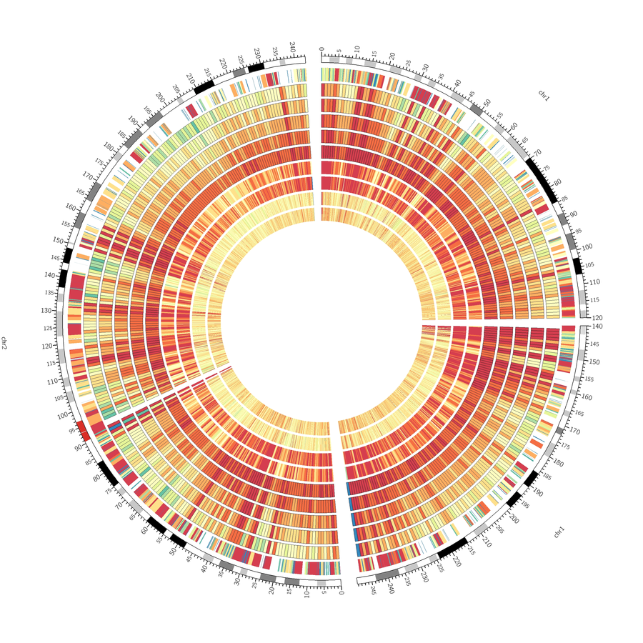
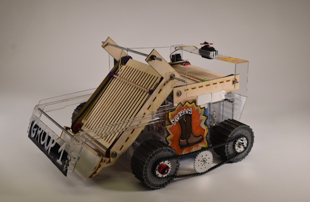
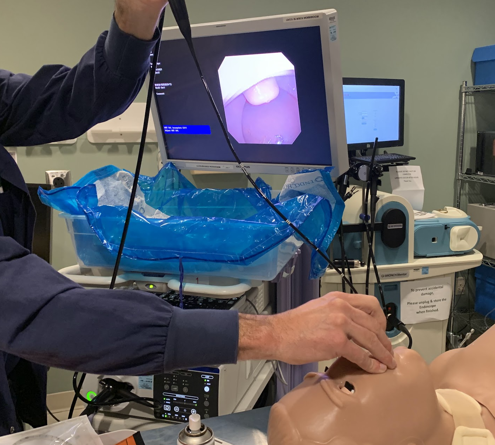
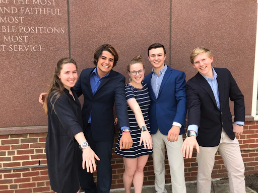
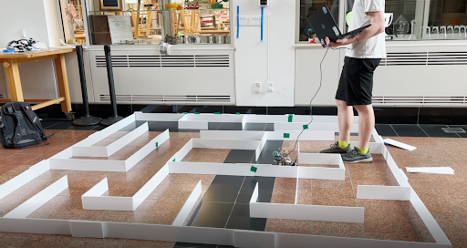

Projects
* hover over an image to read more *
Ultima Genomics
UG100 Consumable Module
May 2022 — Present
- Project lead and head mechanical design engineer for DNA sequencing instrument consumable loading module.
- Final design increased key reliability specifications at a reduced cost.
- Hands-on experience with the full design life cycle, from ideation to implemented finished product.
- Engagement with teams throughout the company to define and evaluate project specifications and performance.
- Responsible for leading comprehensive design review presentations.

Ultima Genomics
Ultima Genomics
UG100 Wafer Handler
May 2022 — Present
- Responsible engineer for silicon wafer handling robot arm.
- Leader of small group engineering team meetings to triage issues and assign projects.
- System-wide problem solving to troubleshoot critical, time-sensitive downtime issues.
- Contributed to improved reliability through projects involving manufacturing tolerances, component selection, and standardizing processes.

Thayer School of Engineering
Thayer School of Engineering
Amphibious Bot
March 2021 — June 2021
- Worked with a team to design and construct a bot to collect and drop off blocks while navigating both on land and in the water.
- Utilized brushed/brushless motors, servo motors, radio control, gearbox design, and mechanical transfer elements to effectively navigate the course using driven wheels, an outboard propeller, and a linkage + belt collection system.
- Designed components in Solidworks and manufactured them with a 3D printer, laser cutter, mill, and lathe.
- Team leader and competition day operator.
- Highest scoring team in the class.

Thayer School of Engineering
Thayer School of Engineering
Novel Expandable Endotracheal Tube
September 2021 — March 2022
- Led a team to design and construct a prototype expandable artificial airway for use in medical procedures.
- Worked closely with project sponsors (two local anesthesiologists) to identify design requirements and develop solution alternatives.
- Ideated design mechanisms supported simpler physician workflows and reduced harmful impacts to patients.
- Created prototype product and roadmap for future development to support project sponsor’s long term goals.
- Body of work shared through detailed engineering reports and professional presentations.

Thayer School of Engineering
Thayer School of Engineering
Alert Wearable
March 2019 — June 2019
- Collaborated with 4 team members to invent and build a wearable notification device that utilizes information gathering technology to help reduce instances of sexual violence and harassment on college campuses.
- Awarded the Phillip R. Jackson Award in recognition of the most outstanding project of the term.
- Lead development of all hardware and software components of the project
- Responsible for timely ideation, design, and creation that incorporated client feedback throughout product development.
- Programmed the Arduino device to geolocate itself using Wi-Fi triangulation and send data to an external server from anywhere on campus. Used Javascript to allow the server to gather data and follow up with users, friends, and campus security via automated SMS messaging.
- Gained experience in teamwork, navigating the design process, giving informative presentations, writing effective reports, and prototyping designs.

Thayer School of Engineering
Thayer School of Engineering
Maze Solving Bot
March 2021 — June 2021
- Lead a team to develop a bot capable of efficiently searching and solving a maze.
- Personally designed sensor layout, position control scheme, wall-following control scheme, and high-level flood fill solution algorithm.
- Used Arduino microcontroller, IR position sensors, and lego motors for navigation.
- Successfully able to search and solve the maze without contacting any of the walls.

Dartmouth College Research
Machine Learning Aircraft Recovery
December 2019 — September 2021
- Used Python and CPLEX to optimized airline schedules and create more efficient disruption responses using a variety of machine learning approaches.
- Only undergraduate working on the project.
- Independently learned and immediately utilized Python.
- Constructed a model using past flight schedules and cost data, wrote a unique recovery algorithm, programmed a solver to optimize the assignment of aircraft, and trained ML classifiers to recognize effective solutions.